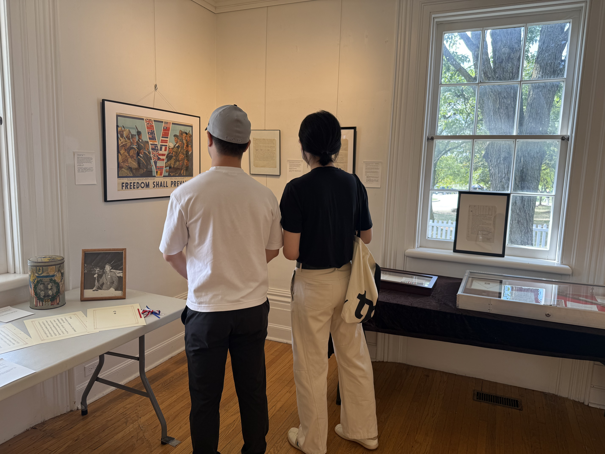
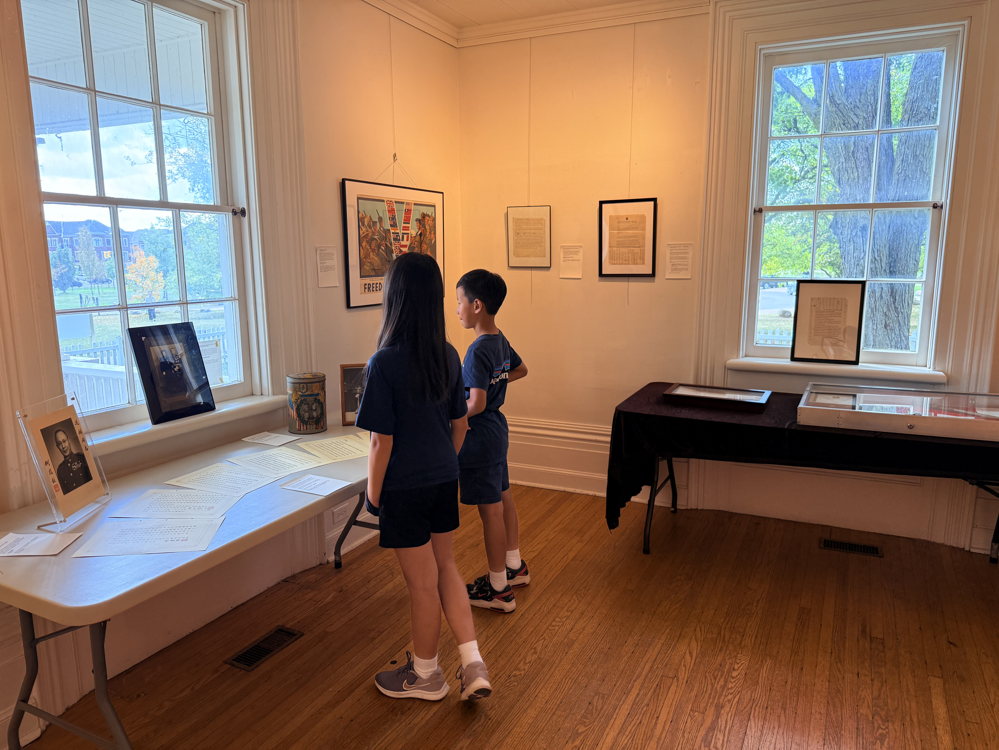
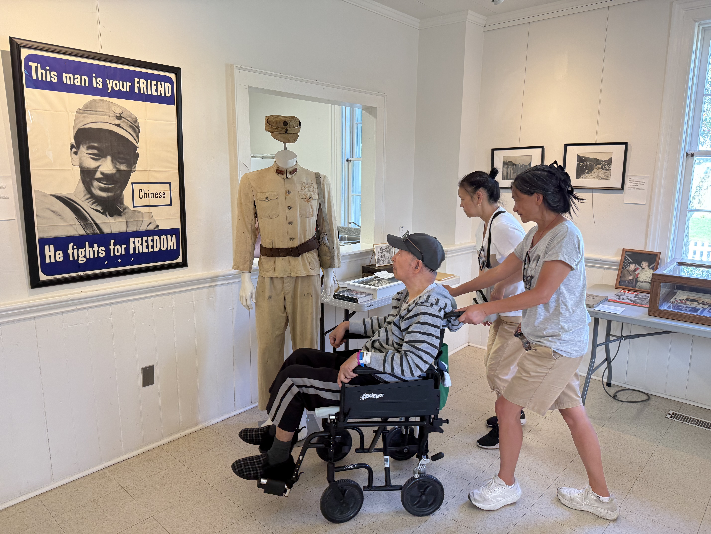
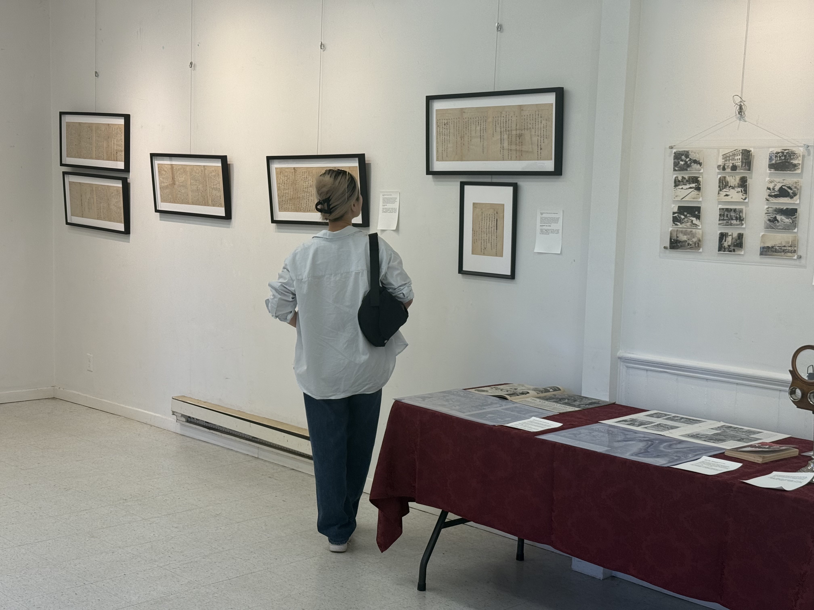
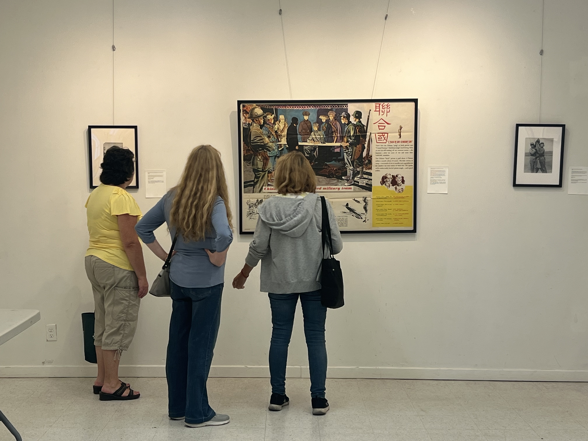

Exhibitions
Past exhibition
Our pop-up and partner exhibitions bring original objects into public spaces. We are also exploring the possibility of permanent exhibitions.

Forgotten Ally from the Far East
Past exhibition
Our first independently curated exhibition ran at Boynton House in Richmond Hill, Ontario, Canada, from September 9 to 14, 2025, marking 80 years since the end of the Second World War.

The Far East's place in Allied victory.
Boynton House, Richmond Hill
More than 100 original photographs, documents, books, periodicals, and objects were shown, many for the first time in North America. Three sections shaped the exhibition: International Support and Cooperation, China Fights Back, and Victory.
1300 Elgin Mills Road East, Richmond Hill





Work with us
Help preserve, study, and share the history of the Far East.
Museums, archives, universities, researchers, educators, community groups, and volunteers are welcome. Contact us about exhibitions, research, translation, public programs, or archival preservation.